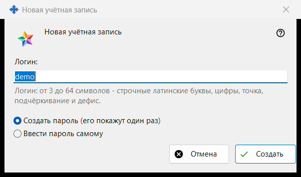
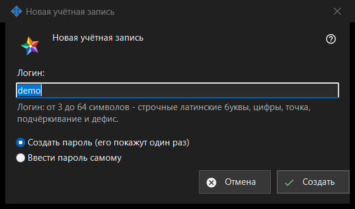

Новая учётная запись
Назначение
Одно окно в двух режимах. «Новая учётная запись» добавляет учётную запись на Media Exchange Server, которым вы управляете; «Сброс пароля: <логин>» задаёт существующей учётной записи новый пароль. Режимы открываются кнопками «Добавить учётную запись..» и «Сбросить пароль..» под списком учётных записей на странице Media Exchange Server в настройках Share Manager; для сброса нужно выбрать учётную запись.


Порядок действий
- В режиме добавления введите логин.
- Выберите, как создаётся пароль.
- В режиме сброса решите, выводить ли из системы все устройства учётной записи.
- Нажмите «Создать» или «Сбросить».
- Скопируйте созданный пароль в следующем окне или введите свой.
Элементы окна
Заявление для первой записи
При самой первой учётной записи окно начинается со строки «Прежде чем создать первую учётную запись, прочтите, что видит оператор сервера:» и нередактируемого поля с этим заявлением. Для следующих записей и для сброса его нет.
Логин
Только в режиме добавления. От 3 до 64 символов: строчные латинские буквы, цифры, точка, подчёркивание и дефис; заглавные приводятся к строчным. Подсказка окрашивается цветом предупреждения, когда текст не может быть логином, и «Создать» не продолжает работу, если он не подходит.
Как создаётся пароль
«Создать пароль (его покажут один раз)» выбрано по умолчанию: программа делает случайный пароль, подходящий под правила, и следующее окно показывает его один раз. «Ввести пароль самому» открывает окно «Пароль учётной записи», где строка под полем сразу называет, чего не хватает: не короче 10 символов, с заглавной и строчной латинской буквой и цифрой.
Выход всех устройств
Только в режиме сброса. Флажок «Сразу вывести из системы все устройства этой учётной записи» стоит по умолчанию. Тогда строка итога сообщает, что пароль изменён и все устройства учётной записи выведены из системы; без флажка - только что пароль изменён.
После ответа сервера
Строка итога сообщает о создании учётной записи. Созданный пароль один раз показывается в отдельном окне с кнопками «Скопировать пароль» и «Задать свой пароль..», которая возвращает к сбросу с вводом пароля вручную. Если включено «Хранить пароли учётных записей на этом ПК», пароль дополнительно сохраняется на этом ПК, и у учётной записи появляется «Показать пароль..». Если эта сборка предлагает клиентские возможности обмена, а у этого ПК нет своей учётной записи, ПК входит с этим паролем как первое устройство учётной записи.
Настройки менеджера · Настройки общего доступа SFTP · Настройки сервера обмена